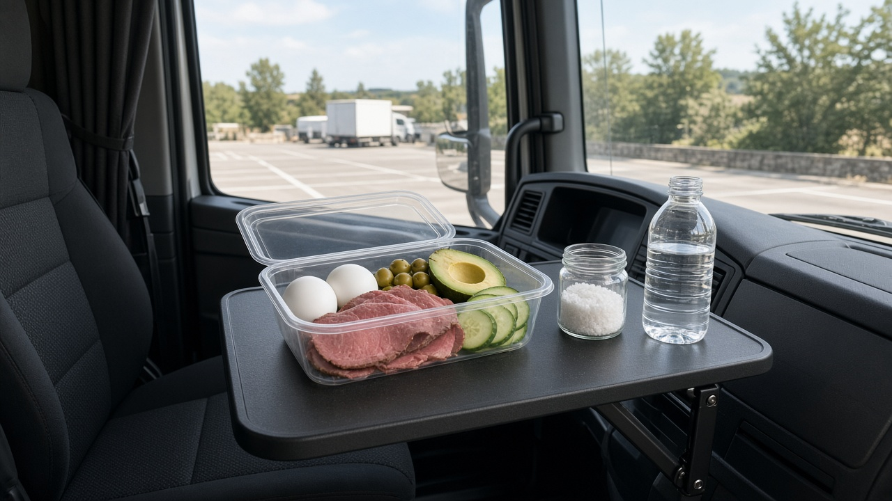
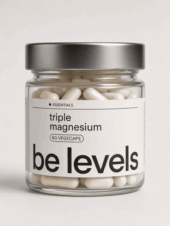
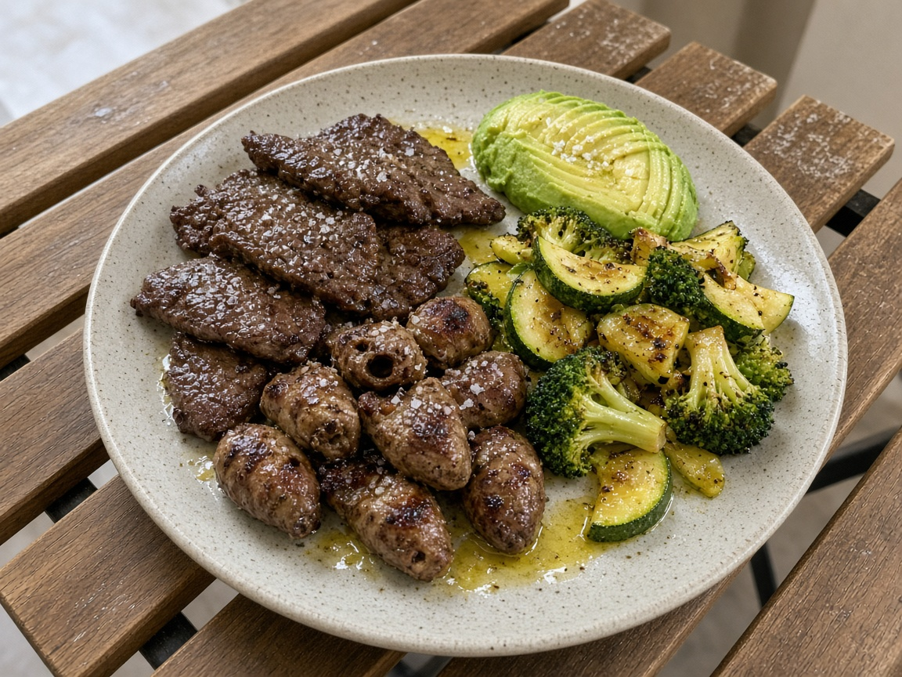

Mundo Keto
Lo primero que aprendí: el ABC de keto
En la primera entrada conté que antes, cuanta más comida comía, más cansado me sentía, y que por la noche leo para despejarme. Para entender bien cómo funciona esto, empecé el Módulo 1 del curso Keto-Fast de Phil Hugo.
De quemar azúcar a quemar grasa
En el curso Keto-Fast de Phil Hugo aprendí qué es la cetosis. Cuando quitas casi todo el azúcar, el pan, la pasta, el arroz y las patatas, baja la insulina y el hígado convierte la grasa en cetonas. Ese pasa a ser tu combustible principal, en lugar del azúcar. En dos días ya puedes generar cetonas, aunque el cuerpo tarda semanas en adaptarse bien.
Lo mejor para el volante es la energía estable. Sin picos de azúcar, el hambre baja y aguantas horas sin pensar en picar. Además, el curso explica cómo medir tus cetonas en sangre (mejor que las tiras de orina) para ver el progreso real.

Grasas buenas, nutrientes y sal
También aprendí que no sirve cualquier grasa. Conviene evitar aceites refinados de semillas, como el de girasol, y margarinas, y elegir grasas naturales: aceite de oliva virgen extra, coco, mantequilla, ghee o aguacate, sin quemarlas al cocinar.
En keto hacen falta proteínas y nutrientes de verdad. En el camión como hígado de ternera, corazones de pollo, pescado y verduras como brócoli, calabacín o pepino, sin fruta. Y para llevar en cabina, las guías del curso proponen opciones prácticas: huevos duros, sardinas en lata, queso curado, nueces de macadamia o cortezas de cerdo en vez de patatas fritas.
Otro punto clave del curso es la sal. Al bajar la insulina, el riñón pierde más agua y sodio; si falta sal llegan el cansancio, los mareos o los calambres. Por eso ayuda usar sal marina sin refinar y agua mineralizada.
Además de la sal, en el curso también se habla del magnesio: la guía de la sal dice que, si hace falta, se puede completar con magnesio y potasio para evitar calambres. El que yo uso es el Triple Magnesium de Be Levels, el mismo que sale anunciado en mi camión, y se toma antes de dormir. Antes de tomar cualquier suplemento, consúltalo con tu médico.


Vídeos y estudios
- Canal de Phil Hugo: Si empezara una dieta keto en 2026, haría esto y Los mejores aceites para cocinar según la ciencia.
- ¿Las dietas cetogénicas quitan de verdad el hambre?: revisión en Obesity Reviews. En cetosis suele bajar la sensación de hambre incluso comiendo menos.
- Dieta cetogénica frente a dieta baja en grasa: metaanálisis en el British Journal of Nutrition con mayor pérdida de peso y bajada de triglicéridos al año.
Esto es mi experiencia personal, no un consejo médico. Antes de cambiar tu alimentación o empezar a ayunar, consúltalo con tu médico.